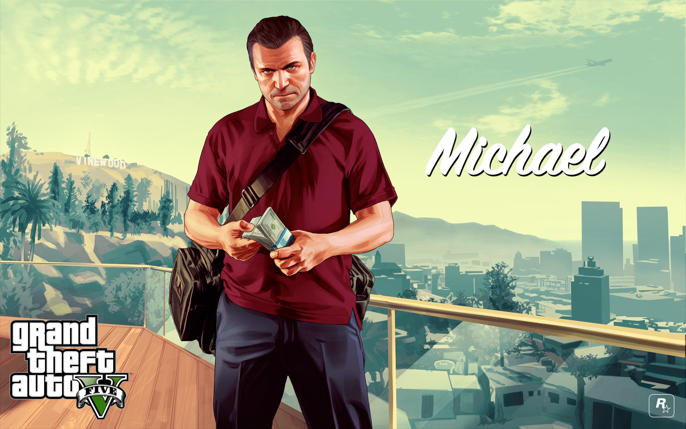

| Name
| Michael De Santa
|
| Gender
| male
|
| Nationality
| Americans
|
| occupation
| Former bank robber,Filmmaker,producer,convict
|
| apartment
| Rockford Hill mansion
|
| Objective resume
| Mike used to be a bank robber, and later Golden Basin Wash made a deal with FIB and became a tainted witness of FIB, due to the conflict between the families, Mike could only drink alone at home, and no one understood the pain in his heart. Mike describes himself as actually wanting to be a good father and loving his family, but the backfire of Mike's children is in a rebellious period and does not understand their father, resulting in frequent quarrels between them. Mike's position in the family gradually became isolated, and he also had an affair.In terms of crime, Mike can quickly make the right decision in seconds, and is the authority to decide the overall plan in the early planning of a large-scale robbery. Mike specializes in the use of firearms for precision shooting, piloting land vehicles and aircraft, and performing assassination operations. As a young man, Mike used to be a rugby player, so he maintained good endurance, and due to physical reasons, physical strength was poor.
|